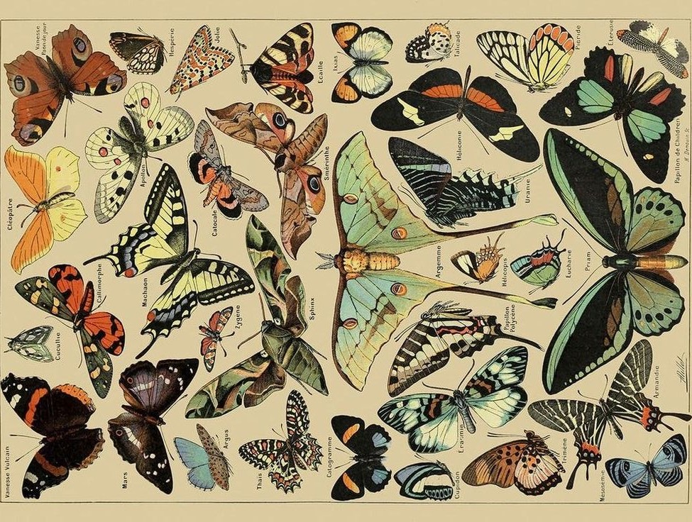

วัตถุประสงค์
เพื่อรวบรวมและนำเสนอข้อมูลเกี่ยวกับผีเสื้อ ให้ผู้เข้าชมได้รู้จักความหลากหลายของสายพันธุ์ และเห็นความสำคัญของผีเสื้อในธรรมชาติ
THE WORLD OF BUTTERFLIES
The Butterfly Archive คือเว็บไซต์ที่รวบรวม ภาพและเรื่องราวของผีเสื้อหลากหลายสายพันธุ์ ถ่ายทอดความงดงามของสีสัน ลวดลาย และเอกลักษณ์ที่แตกต่างกันของผีเสื้อแต่ละชนิด
เราตั้งใจสร้างพื้นที่สำหรับการสำรวจและเรียนรู้ ธรรมชาติ ผ่านภาพประกอบและข้อมูลที่น่าสนใจ เพื่อให้ทุกคนได้มองเห็นคุณค่าของสิ่งมีชีวิต เล็ก ๆ ที่มีความสำคัญต่อระบบนิเวศ
A COLLECTION OF NATURAL WONDERS

BEHIND THE ARCHIVE
เพื่อรวบรวมและนำเสนอข้อมูลเกี่ยวกับผีเสื้อ ให้ผู้เข้าชมได้รู้จักความหลากหลายของสายพันธุ์ และเห็นความสำคัญของผีเสื้อในธรรมชาติ
ได้รับแรงบันดาลใจจากหนังสือประวัติศาสตร์ธรรมชาติ และภาพวาดพฤกษศาสตร์ในอดีต ซึ่งถ่ายทอดความงามของธรรมชาติผ่านรายละเอียด
ใช้โทนสีอบอุ่น รูปแบบตัวอักษรคลาสสิก และองค์ประกอบแบบวินเทจ เพื่อสร้างบรรยากาศคล้ายหนังสือสะสมภาพธรรมชาติ
THE BEAUTY OF NATURE IS IN EVERY DETAIL
สำรวจคอลเลกชันผีเสื้อ →